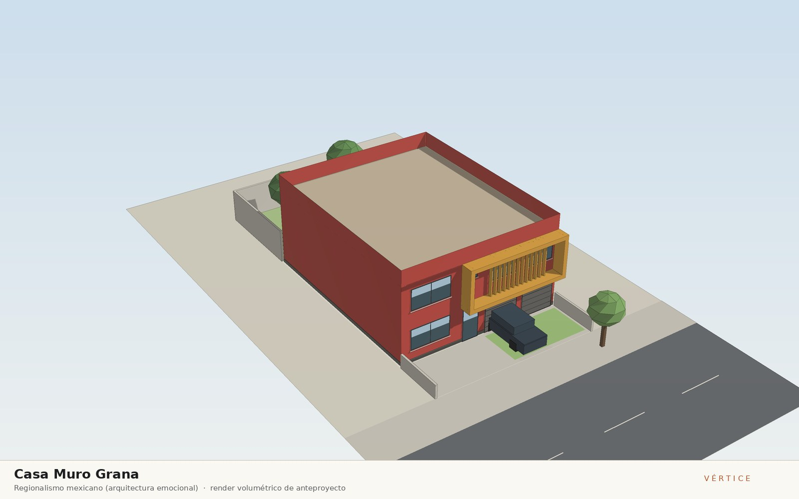
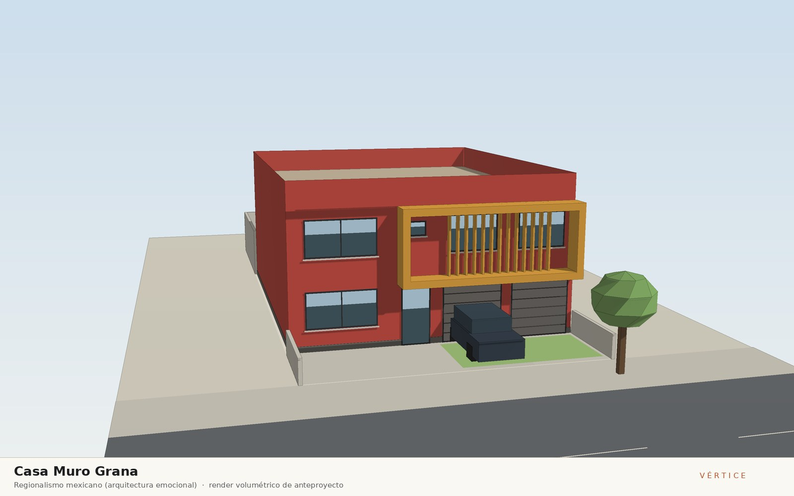
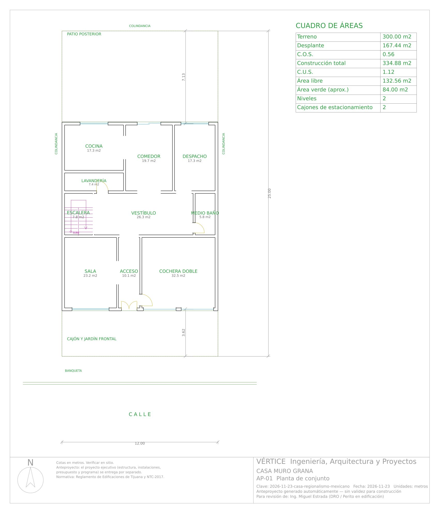
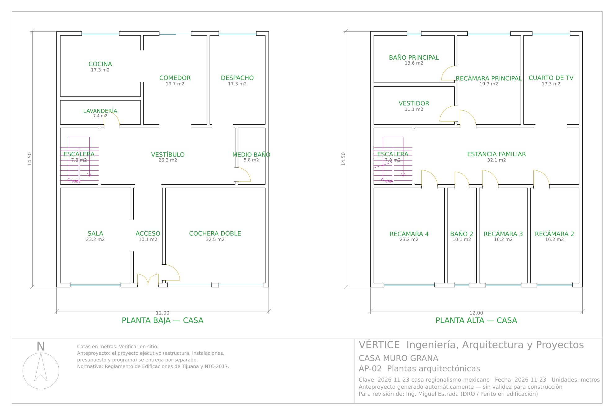
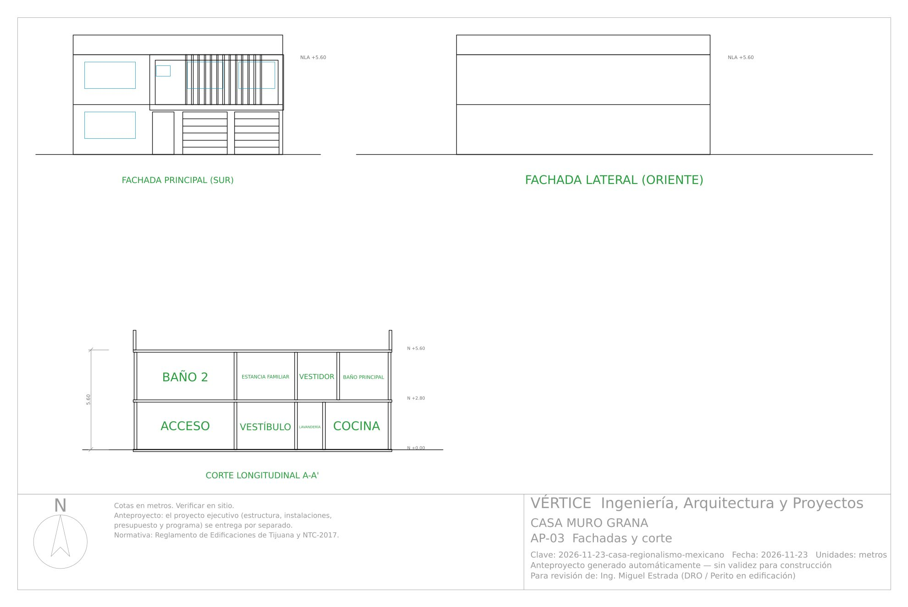

23 de noviembre de 2026 · Casa habitación
Casa Muro Grana
Corriente: Regionalismo mexicano (arquitectura emocional)

Concepto
Vivienda de dos niveles en un lote de 12 x 25 m en Tijuana que traduce la arquitectura emocional mexicana a la luz del Pacífico: planos de color grana y ocre, vanos medidos y profundos, y la sombra como material. Las colindancias oriente y poniente son muros ciegos que cortan el sol de la tarde, y hacia la calle la casa se presenta casi cerrada: la sala tiene una sola ventana y, en planta alta, un marco ocre recorta el volumen grana y sostiene una celosía de barro frente a las recámaras 2 y 3 que tamiza el sol del sur y guarda la intimidad sin cerrar la ventilación. El interior se abre al jardín del norte: el comedor sale al patio por un cancel corredizo junto a la cocina y el despacho, y la brisa marina entra por el patio y cruza la casa hasta la calle a través del vestíbulo.
Dictamen del arquitecto
- Terreno de 12.00 x 25.00 m (300 m²); casa de 11.75 x 14.25 m a ejes en 2 niveles, 334.9 m² construidos con desplante de 167.4 m²: COS 0.56 y CUS 1.12, 132.6 m² libres (≈ 84 m² de área verde) con 3.62 m de cajón y jardín al frente y 7.13 m de patio posterior; uso habitacional unifamiliar por verificar con el PDU de Tijuana. Cochera doble de 32.5 m² con dos portones seccionales de 2.50 m y columna central; partido 'sala_frente' en espejo (cochera al oriente), distinto de los últimos proyectos de 12 x 25 m.
- Regionalismo mexicano con dos rasgos que trabajan juntos: marco volumétrico ocre que recorta el volumen grana en planta alta y celosía de barro recocido dentro del marco frente a las recámaras 2 y 3 (sol del sur), con proporción de vano baja (0.30) y colindancias ciegas al oriente y poniente. Se descartaron 'muro_acento' y 'jardinera' porque, con la sala al frente, la fachada principal no deja paños ciegos de ≥ 0.90 m ni de ≥ 1.00 m en planta baja (el motor los omitía); espejo de agua y patio cenital quedan como propuesta, el motor aún no los dibuja.
- Recorrido: acceso de 10.1 m² con puerta doble de 1.20 m que abre a la sala (23.2 m²) y a la cochera → vestíbulo (26.3 m²) con escalera en U de 1.15 m (peralte 17.5 cm, huella 29.0 cm, 2p + h = 64 cm), medio baño (5.8 m², sin ventana: extractor obligatorio) y lavandería (7.4 m², interior: extracción mecánica y ducto de secadora al exterior) → comedor (19.7 m²) abierto a la cocina (17.3 m²) y al patio por cancel corredizo P-4 de 1.80 m, y despacho (17.3 m²) con ventana al jardín.
- Planta alta: estancia familiar (32.1 m²) que reparte a recámaras 2 y 3 (16.2 m², 2.90 x 5.60 m), recámara 4 (23.2 m²) y baño 2 (10.1 m²) al sur, cuarto de TV (17.3 m²) y recámara principal (19.7 m²) con vestidor (11.1 m²) y baño (13.6 m²) al norte. Todas las recámaras ≥ 2.70 m de lado con ventana al exterior; altura libre 2.67 m en ambos niveles (≥ 2.30 m).
- Cédula de acabados completa: barro tipo saltillo 30x30 sellado en locales secos y escalera, porcelanato antiderrapante 60x60 en baños, cerámico en lavandería y concreto escobillado en cochera; 302.4 m² de piso iguales en planos y presupuesto. Motor corregido: el cancel al patio ahora va en la sala o el comedor (en este partido caía en el despacho y el comedor y la cocina no tenían salida al jardín) y la cláusula 'antiderrapante … en baños' ya no hace que la cédula caiga en 'Porcelanato 60x120 tono arena'.
Dictamen de ingeniería
- Veredicto: construible conforme a norma — 0 errores y 0 avisos en las 29 verificaciones de coordinación. El ciclo arquitectura–estructura limitó los vanos abiertos entre locales a 1.80 m y pasó a block de 20 cm los muros en X (Y de 15 cm); 2 muros de planta alta sin apoyo continuo se especifican como divisorios ligeros de tablaroca; castillos sin interferir con vanos.
- Mampostería confinada (Q = 1.5): castillos K-1 15x20 (52 en planta baja y 56 en planta alta), dalas de desplante, cerramiento y remate; trabe de carga T-1 30x55 con 5 #6 sobre la cochera doble apoyada en la columna C-1 15x30 (11.5 t) entre portones, y 12 cerramientos T-2 a T-13 de 15x30 a 20x30. Método simplificado NTC: X VR 79.8 t ≥ Vu 77.8 t (dirección crítica, holgura de sólo 2.5 %: no reducir muros en X en obra); Y VR 116.9 t ≥ 77.8 t. V basal 70.8 t con c = 0.213 supuesto y T = 0.18 s.
- Losas macizas de 13 cm en entrepiso (≥ 12.7 cm) y azotea (≥ 12.8 cm), #3 @ 10–20 cm en ambos sentidos. Zapatas corridas B = 50 cm, h = 20 cm, #4 @ 33: ZC-1 perimetral (q = 5.75 t/m², excéntrica en los linderos oriente y poniente) y ZC-2 interior (q = 9.45 t/m², 79 % de la capacidad) contra una q adm supuesta de 12 t/m² a -0.80 m: requiere estudio de mecánica de suelos y confirmar el espectro sísmico del sitio. Cuantificación: 6,703 kg de acero (20.0 kg/m²) y 78.8 m³ de concreto.
- Instalaciones: 6 ocupantes (0.9 m³/día), 22 UM en 11 muebles (1.21 L/s), toma Ø13 mm, alimentación Ø25 mm, cisterna de 2 m³ con hidroneumático de 1/2 HP y calentador de paso a gas; 25 UD, bajadas del baño 2 (al acceso) y del baño principal (a la cocina) junto a muro, colector Ø100 mm PVC al 2 % a la red CESPT con ventilación Ø50 mm; 167 m² de captación, 4.7 L/s a 2 bajadas Ø100 mm (≈ 9.0 L/s) separadas del sanitario; 17 circuitos (15,618 W instalados, 10,933 W de demanda, 55.2 A), interruptor general 2P-70 A, desbalance 1.1 %; gas LP con tanque estacionario de 500 L en azotea, ventilado y a más de 3 m de flamas, red de cobre tipo L con regulador de 2 etapas y llave de paso por aparato. Factibilidades de CESPT y CFE por tramitar.
- Presupuesto de $1,897,400 + IVA ($2,049,192 con IVA fronterizo; $5,666/m²) y programa de 23 semanas (134.5 días hábiles); marco volumétrico, celosía de barro, cancelería, portones, muebles y equipos quedan en la hoja "Por cotizar" (36 partidas) hasta tener cotización de proveedores de Tijuana.
Materiales
Muros de block de concreto con aplanado fino y pintura a la cal color grana en el volumen principal; marco volumétrico de concreto aplanado color ocre en planta alta; celosía de piezas de barro rojo recocido; colindancias con aplanado e impermeabilizante; losas de concreto con pretil e impermeabilizante blanco reflectivo; piso de barro tipo saltillo sellado 30x30 en locales secos y escalera, antiderrapante 60x60 en baños; cancelería de aluminio negro con vidrio claro de 6 mm; puerta de acceso de madera de pino tratada con herrajes de herrería forjada
Vistas

Anteproyecto — descargas
Láminas del anteproyecto






Proyecto ejecutivo
Proyecto ejecutivo completo — 17 láminas. Se entrega por separado; no se publica en esta galería.
Revisión de coordinación arquitectura–estructura–instalaciones–acabados y normativa: Sin errores · 0 avisos en 29 verificaciones.
Arquitectónico
- A-01 Planta de conjunto
- A-02 Plantas arquitectónicas amuebladas
- A-03 Plantas acotadas a ejes
- A-04 Planta de azotea
- A-05 Fachadas
- A-06 Cortes arquitectónicos
- A-07 Cancelería y acabados
Estructural
- E-01 Planta de cimentación
- E-02 Losas, trabes y castillos
- E-03 Detalles estructurales
- E-04 Cuantificación de acero y concreto
Instalaciones
- IH-01 Instalación hidráulica
- IS-01 Instalación sanitaria y pluvial
- IE-01 Instalación eléctrica
- IG-01 Instalación de gas LP
- IH-02 Isométrico hidráulico
- IE-02 Cuadro de cargas y diagrama unifilar
Incluye: Memoria técnica (Word/PDF) · Presupuesto (Excel) · Programa de obra (Excel y Gantt) · Juego de planos (PDF y DXF)
Revisión de calidad
Sin errores · 1 avisos
| Tipo | Nivel | Observación |
|---|---|---|
| Aviso | Casa · Planta baja | Medio baño: ventilación mecánica (extractor) obligatoria. |
Cuadro de áreas
Ver los 20 espacios
| Bloque | Nivel | Espacio | Medidas (m) | Área (m²) |
|---|---|---|---|---|
| Casa | Planta baja | Cochera doble | 5.80 x 5.60 | 32.48 |
| Casa | Planta baja | Acceso | 1.80 x 5.60 | 10.08 |
| Casa | Planta baja | Sala | 4.15 x 5.60 | 23.24 |
| Casa | Planta baja | Medio baño | 1.70 x 3.40 | 5.78 |
| Casa | Planta baja | Vestíbulo | 7.75 x 3.40 | 26.35 |
| Casa | Planta baja | Escalera | 2.30 x 3.40 | 7.82 |
| Casa | Planta baja | Despacho | 3.29 x 5.25 | 17.27 |
| Casa | Planta baja | Comedor | 3.76 x 5.25 | 19.74 |
| Casa | Planta baja | Lavandería | 4.70 x 1.57 | 7.40 |
| Casa | Planta baja | Cocina | 4.70 x 3.67 | 17.27 |
| Casa | Planta alta | Recámara 2 | 2.90 x 5.60 | 16.24 |
| Casa | Planta alta | Recámara 3 | 2.90 x 5.60 | 16.24 |
| Casa | Planta alta | Baño 2 | 1.80 x 5.60 | 10.08 |
| Casa | Planta alta | Recámara 4 | 4.15 x 5.60 | 23.24 |
| Casa | Planta alta | Estancia familiar | 9.45 x 3.40 | 32.13 |
| Casa | Planta alta | Escalera | 2.30 x 3.40 | 7.82 |
| Casa | Planta alta | Cuarto de TV | 3.29 x 5.25 | 17.27 |
| Casa | Planta alta | Recámara principal | 3.76 x 5.25 | 19.74 |
| Casa | Planta alta | Vestidor | 4.70 x 2.36 | 11.11 |
| Casa | Planta alta | Baño principal | 4.70 x 2.89 | 13.57 |
Anteproyecto conceptual generado por el motor Vértice. El predimensionamiento estructural y los cálculos de instalaciones son preliminares y no sustituyen la memoria de cálculo definitiva, el estudio de mecánica de suelos ni la revisión y firma del DRO y corresponsables.